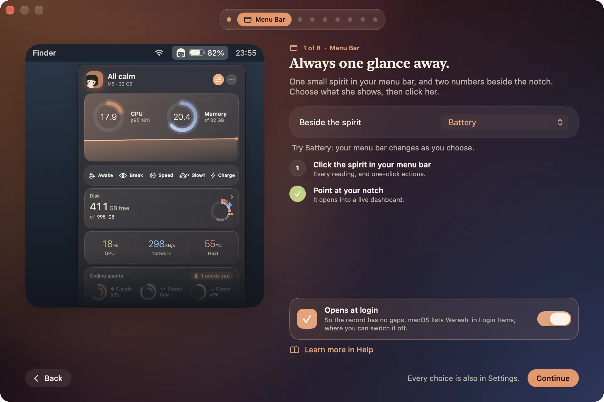

Przy pierwszym otwarciu Warashi krótki, praktyczny przewodnik oprowadza Cię po aplikacji. Lista po lewej to ta sama mapa co w oknie Warashi; kliknij dowolny krok, żeby do niego przejść. Każda strona pokazuje prawdziwe rzeczy, na żywo, i pozwala je wypróbować: każdy przełącznik to prawdziwe ustawienie, a gdy coś działa, zielony znacznik mówi, co się teraz dzieje. Każda strona mówi też, gdzie zmienić to później, i ma Więcej w Pomocy, które otwiera odpowiednią część tej Pomocy. Zajmuje to około dwóch minut i wszystko możesz pominąć.
- Witaj
Czym jest Warashi i cztery obietnice: Twoja historia zostaje na Twoim Macu, nie ma konta ani nic do ustawiania na start, prosi tylko o to, czego potrzebuje dana funkcja, a anonimowe statystyki użycia pomagają je ulepszać. Kliknij Oprowadź mnie.

Strona 1: Poznaj Warashi. - Pasek menu
Wybierz liczbę obok duszka i patrz, jak Twój prawdziwy pasek menu się zmienia. Pokazuj, co wymaga uwagi pozwala liczbie przełączyć się na ostrzeżenie, gdy brakuje pamięci albo Mac jest gorący. Potem spróbuj: kliknij duszka na pasku menu, a strona potwierdzi, że okno paska menu się otworzyło.

Strona 2: element paska menu i kliknięcie go. - Wycięcie
Spróbuj: zatrzymaj wskaźnik na wycięciu (albo na wyspie na innym monitorze). Strona zauważy, że panel się otworzył, i powie, co możesz z nim zrobić. Niżej: przełączniki podglądu, wyspy i Odliczania na żywo oraz przycisk zamiany dwóch liczb.

Strona 3: wycięcie i wyspa. - Historia
Przykładowy dzień w Dzienniku pokładowym i jak kliknąć dowolny moment w Historii. Włącz Zapisuj, która aplikacja jest na wierzchu, żeby widzieć, jak długo używasz każdej aplikacji; strona potwierdzi zapisywanie i pokaże, gdzie pojawi się Twój czas. Zapisywane są tylko przełączenia aplikacji, nigdy tytuły okien, strony ani klawisze.

Strona 4: Historia, Dziennik pokładowy i zapis aktywności (opcjonalny). - Alerty
Cztery proponowane alerty: aplikacja zużywająca dużo procesora, szybko rosnąca pamięć, zapełniający się dysk startowy i gorąca bateria. Włącz jeden, a macOS raz zapyta o powiadomienia. Po zgodzie Wyślij próbne pokaże przykład, a strona potwierdzi, że alerty będą docierać. Jeśli powiadomienia są wyłączone, powie, gdzie je włączyć.

Strona 5: Alerty. - Kondycja
Karta limitu ładowania z okna paska menu, na żywo: włącz Zatrzymaj ładowanie na, a strona potwierdzi, gdzie ładowanie się zatrzyma. Potem jak dotrzeć do Kontroli, Dlaczego mój Mac jest wolny? i Miejsca na dysku.

Strona 6: Kondycja. - Przerwy
Miniatura prawdziwego ekranu przerwy. Włącz Przerwy, wybierz rytm (20-20-20, Pomodoro, 50 i 10 albo Głęboka praca) i włącz lub wyłącz Usiądź prosto. Wypróbuj przerwę pokazuje prawdziwą (kończy ją Pomiń albo Esc), a Pokaż Usiądź prosto pokazuje przypomnienie o postawie wznoszące się na środek ekranu.

Strona 7: Przerwy. - Rozmycie tła
Podgląd Rozmycia tła na żywo. Spróbuj: naciśnij ⌃⌥⌘F, a wszystko poza przewodnikiem łagodnie się rozmyje; strona to potwierdzi. Wybierz Łagodny lub Głęboki i włącz opcjonalne potrząśnięcie wskaźnikiem.

Strona 8: Rozmycie tła. - Narzędzia
Włącz Nie usypiaj przez godzinę, żeby to wypróbować; strona potwierdzi, że Mac nie zaśnie i że samo się zatrzyma. Dalej testy szybkości, Czyszczenie ekranu i klawiatury oraz ⌘K, które znajduje każde narzędzie po nazwie. Zobacz Narzędzia.

Strona 9: Narzędzia. - Uprawnienia
Warashi działa bez żadnego z nich; każde odblokowuje jakąś jego część. Każda karta mówi, do czego służy i czy jest Wyłączony, Prawie gotowe czy Włączony, a strona zauważa, gdy tylko coś włączysz w Ustawieniach systemowych.
- Powiadomienia: naciśnij Zezwól, a macOS zapyta raz (już zrobione, jeśli włączyłeś alert). Potrzebne do alertów.
- Narzędzie systemowe: naciśnij Włącz, a potem włącz Warashi w Ustawieniach systemowych › Ogólne › Rzeczy i rozszerzenia otwierane podczas logowania (administrator zatwierdza to raz). Dzięki temu Warashi może zatrzymać ładowanie na dowolnym poziomie, nie usypiać Maca przy zamkniętej pokrywie i widzieć procesy samego macOS.
- Pełny dostęp do dysku: naciśnij Otwórz Ustawienia systemowe i włącz Warashi na liście albo przeciągnij tam ikonę. Miejsce na dysku widzi wtedy cały dysk naraz, a Kontrola może odczytać, kiedy Time Machine ostatnio wykonał kopię zapasową. Tylko nazwy, rozmiary i daty, nigdy zawartość plików. Jeśli macOS zastosuje zmianę dopiero po ponownym uruchomieniu Warashi, naciśnij Otwórz Warashi ponownie: prezentacja wróci do tej strony.
Każde można pominąć. Dwa są pytane tylko w razie potrzeby: przy usuwaniu aplikacji w Miejscu na dysku i przy opróżnianiu Kosza z rzeczy wymagających hasła.

Strona 10: Uprawnienia (każde opcjonalne). - Gotowe
Co jest włączone: wszystko, co ustawiłeś w przewodniku, odczytane na żywo, z miejscem, gdzie to zmienić. Ucz się dalej: Pomoc, Pytania i odpowiedzi, Poradniki i Co nowego, otwierane na warashi.app w Twoim języku. Przydatne skróty, Otwieraj Warashi przy logowaniu, żeby historia nie miała luk, a potem Rozpocznij monitorowanie.

Strona 11: co jest włączone i gdzie dowiedzieć się więcej.
Gdy coś nie działa
- Kliknięcie duszka lub wskazanie wycięcia nie zostaje odhaczone: upewnij się, że element Warashi jest widoczny na pasku menu i że podgląd przy wycięciu jest włączony.
- Naciśnięcie ⌃⌥⌘F nic nie robi: inna aplikacja może używać tego samego skrótu. Użyj zamiast tego Włącz na stronie.
- Wyślij próbne nic nie pokazuje: zezwól Warashi w Ustawieniach systemowych › Powiadomienia.
- Narzędzie systemowe pokazuje Prawie gotowe: otwórz Ustawienia systemowe › Ogólne › Rzeczy i rozszerzenia otwierane podczas logowania i włącz Warashi w sekcji Pozwalaj w tle.
- Prezentacja się nie pojawiła: otwórz Warashi z Aplikacji, a potem Ustawienia › Ogólne › Pokaż powitanie ponownie.
Więcej w sekcji Rozwiązywanie problemów lub napisz na adam@warashi.app.